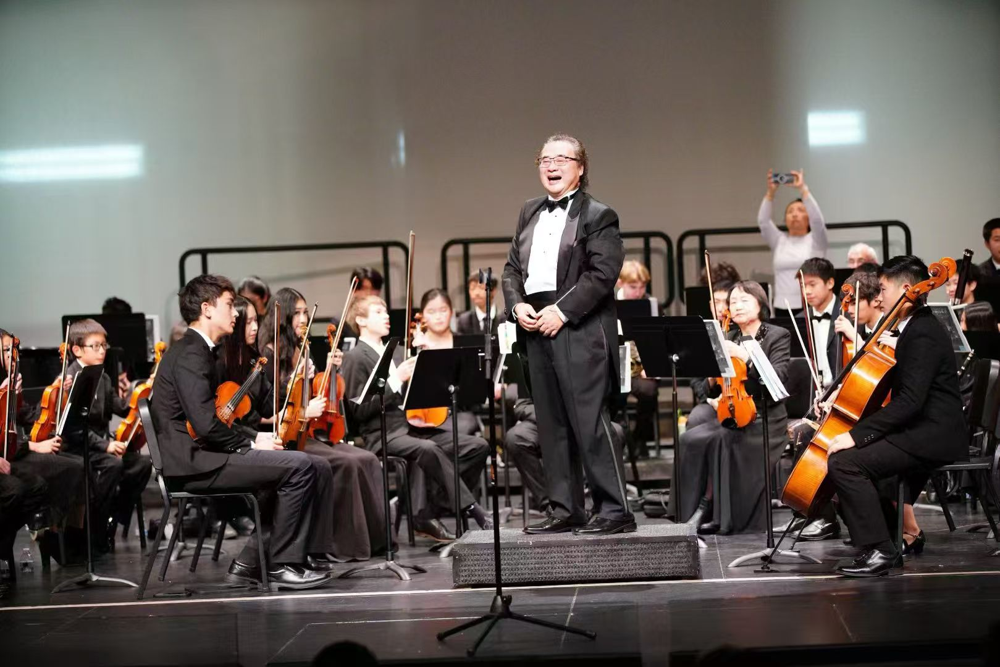
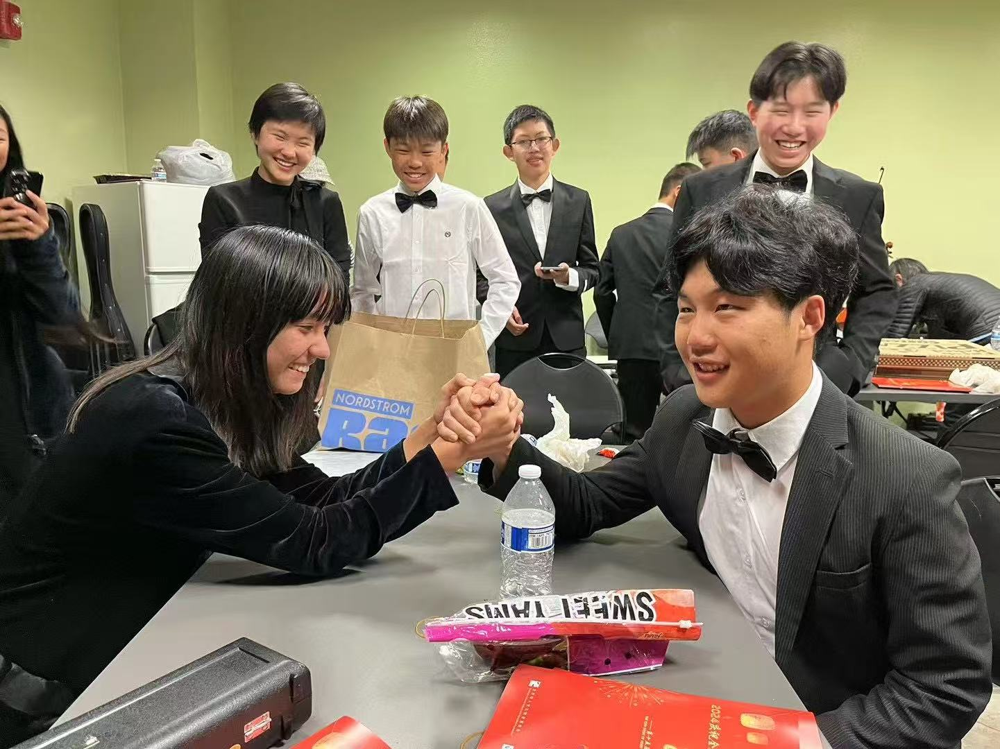
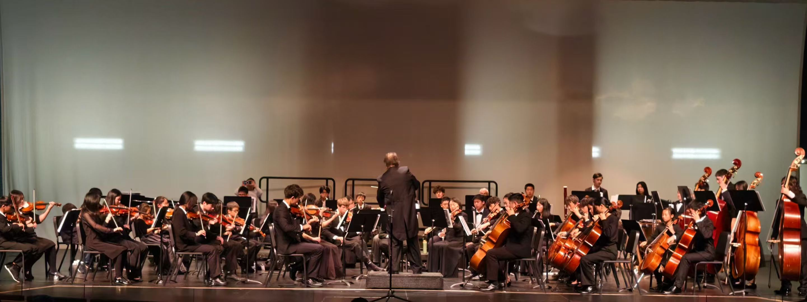

14Mar
2026
2026
Concert archive
↗Rancho Peñasquitos Library
10:00 am–12:00 pm · 13330 Salmon River Road, San Diego, CA 92129
San Diego, California · Est. 2017
A place for ambitious young musicians to grow, perform, and discover what becomes possible when we listen to one another.
Our story
AmeriCal Youth Symphony is a distinguished youth orchestra dedicated to nurturing talented young musicians in the pursuit of musical excellence.
Founded on February 14, 2017 by Music Director and Founding Conductor Dr. Sheng Yang, we began with four dedicated students. Today, nearly seventy registered members learn, rehearse, and perform together.
ACYS operates under Friends of We Chinese in America, a nonprofit committed to education, cultural exchange, and long-term community engagement.
On the calendar
10:00 am–12:00 pm · 13330 Salmon River Road, San Diego, CA 92129
7:00–9:00 pm · 11525 Sorrento Valley Road, San Diego, CA 92121
Presented by San Diego Public Library & AmeriCal Youth SymphonyInside AmeriCal
Concert nights, Saturday rehearsals, and the friendships made between them.




Your place is here
Whether you’re ready to audition, support a young musician, or experience us in concert, we’d love to welcome you into the AmeriCal community.